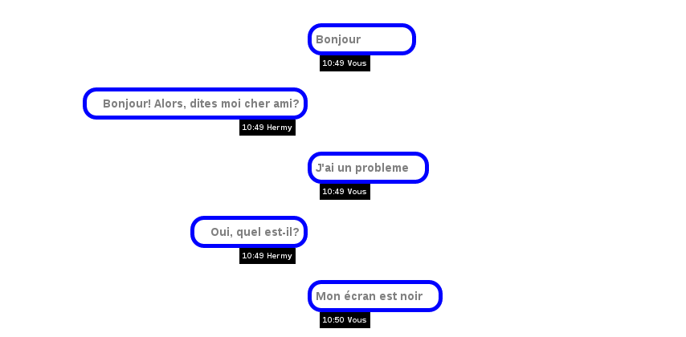
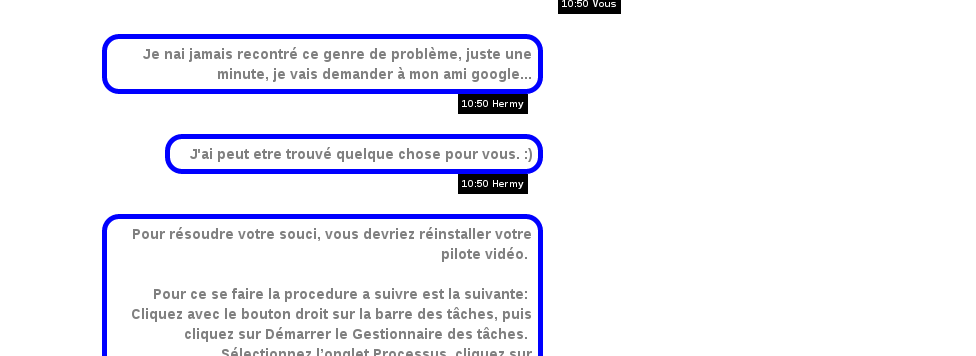

Par analogie à la célèbre Hermione 1 du film d’Harry Potter, notre robot doit être capable de pouvoir apporter une solution à tous les problèmes possibles liés à l'informatique. Nous avons baptisé notre Hermione. Il doit être capable d'apporter une solution fonctionnel à n'importe quel problème, si il ne trouve pas de solution il doit pourvoir faire la proposition de se référer à une autre source. Bien entendu Hermione est capable de dire d’entretenir une conversation simple et est doté d'un minimum d'humour.
Le fonctionnement est très simple, vous entrer votre question puis vous tapez Entrée. A la maniere des applications de chat. Par exemple :

